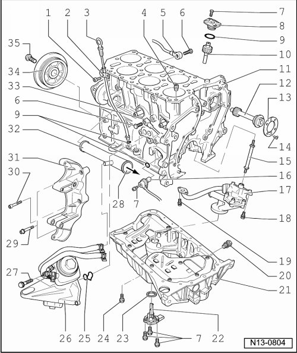

Cylinder Block Assembly: Service and Repair
Cylinder Block, Assembly Overview

1 8 Nm
• To intake manifold
2 Guide tube
• For dipstick
• Secured by a bolt to intake manifold
3 Dipstick
• Oil level must not be above the max. mark!
• Marks --> [ Oil Dipstick Markings ] Description and Operation.
4 Oil check valve
• Note installation position
• Removing and installing --> [ Oil Check Valve ] Service and Repair.
• Clean or replace if badly soiled
• See note --> [ Secure engine to when working on engine. ] Engine Installing.
5 Knock Sensor (KS) 1 (G61)
• Component location: Between cyl. 1 and cyl. 3
6 20 Nm
• Tightening specifications influence the function of knock sensor
7 10 Nm
8 Oil pump drive cover
9 O-ring
• Replace
• Oil before assembling
10 Oil pump drive
11 Cylinder block
• Removing and installing sealing flange and dual-mass flywheel/drive plate--> [ Sealing Flange, Assembly Overview ] Service and Repair.
• Removing and installing crankshaft --> [ Crankshaft, Assembly Overview ] Crankshaft, Assembly Overview.
• Piston and connecting rod, disassembling and assembling --> [ Piston and Connecting Rod, Assembly Overview ] Service and Repair.
12 Intermediate shaft
13 Thrust washer
• Not installed on all engines
14 10 Nm
• Insert using locking fluid (D 000 600 A2)
15 Input shaft
• For oil pump drive
16 Engine speed (RPM) sensor (G28)
17 Oil pump
• Disassembling and assembling --> [ Oil Pump, Assembly Overview ] Service and Repair.
18 23 Nm
19 8 Nm
• Insert using locking fluid (D 000 600 A2)
20 Oil drain plug, 30 Nm
• Replace
21 Oil pan
• Removing and installing --> [ Oil Pan ] Service and Repair.
22 Oil level thermal sensor (G266)
• Not installed on all engines
23 Seal
• Replace
• Oil before assembling
24 20 Nm
25 Seal
• Replace
26 Oil filter housing/left engine bracket
• Disassembling and assembling --> [ Oil Filter Housing, Assembly Overview ] Service and Repair.
• Coolant hose connection diagram --> [ Coolant Hose Connection Diagram ] [1][2]Cooling System.
• Engine bracket and left/right engine mounts, removing --> [ Engine Bracket and Mount ] Service and Repair.
27 23 Nm
28 To thermostat housing
29 25 Nm
30 Fitting bolt, 25 Nm
31 Compact bracket
• For generator, air conditioning compressor, and power steering pump
32 Coolant line
• Removing and installing --> [ Cooling System Components, Engine Side, Assembly Overview ] Cooling System Components, Engine Side, Assembly Overview.
33 Knock Sensor (KS) 2 (G66)
• Component location: Between cyl. 4 and cyl. 6
34 Vibration damper
• Removing and installing ribbed belt --> [ Ribbed Belt ] Ribbed Belt.
35 100 Nm + 1/2 turn (180°)
• Replace
• Use counter-holder tool (T10069) for loosening and tightening --> [ To Loosen and Tighten Bolt, Lock Vibration Damper using Counter-Holder Tool (T10069)]
• Tighten using torque wrench (V.A.G 1601)
To Loosen and Tighten Bolt, Lock Vibration Damper using Counter-Holder Tool (T10069)

• Vibration damper securing bolt must be replaced.
• Tighten securing bolt using torque wrench (V.A.G 1601).